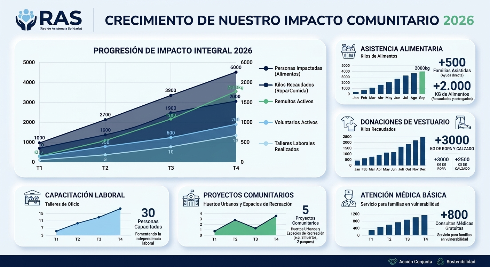

Red Asistencia Solidaria es una organización sin fines de lucro, dedicada a mejorar la calidad de vida de personas en situación de vulnerabilidad, en donde creemos en el poder de la solidaridad y el trabajo colectivo, como herramientas fundamentales para transformar realidades. Nuestra organización está formada por voluntarios comprometidos que trabajan día a día para brindar contención, asistencia y oportunidades a quienes más lo necesitan.
| Numero de Impacto | Área | Detalle |
|---|---|---|
| +500 | Familias Asistidas | Han recibido ayuda directa en el último año |
| +2.000 | Kg de alimentos | Recaudados y entegados en nuestras campañas |
| 120 | Voluntarios activos | Personas comprmetidas que donan su timpo energía |
| 15 | Talleres de oficio | Espacios dictados para fomentar la independencia labolar |
En RAS entendemos que el hambre y el frío no pueden esperar, por eso nuestra ayuda inmediata a través de alimentos y abrigo es constante. Sin embargo, nuestro verdadero valor agregado es el acompañamiento social: escuchamos, contenemos emocionalmente y guiamos en la búsqueda de empleo para que la asistencia de hoy se transforme en la independencia de mañana.
